11 Generalized Additive Models
In chapter (slm?), we covered the principle behind simple linear regression and you know how to interpret the results. In this chapter discuss about multiple linear regression. We also start with the underlying principle of multiple linear regression, then show how to interpret the results, how to test the conditions of application and finish with more advanced topics.
11.1 Principle
Multiple linear regression is a generalization of simple linear regression, in the sense that this approach makes it possible to relate one variable with several variables through a linear function in its parameters.
Multiple linear regression is used to assess the relationship between two variables while taking into account the effect of other variables. By taking into account the effect of other variables, we cancel out the effect of these other variables in order to isolate and measure the relationship between the two variables of interest. This point is the main difference with simple linear regression.
To illustrate how to perform a multiple linear regression in R, we use the pangani dataset than the one used for simple linear regression (mtcars). Below a short preview:
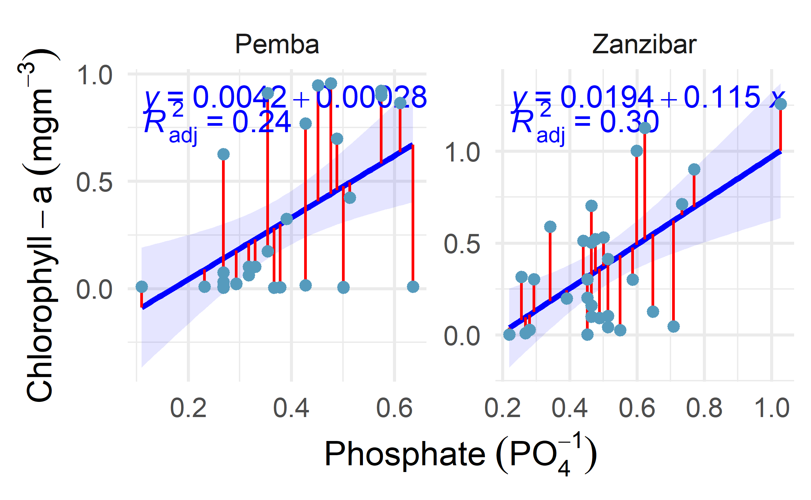
Looking on Figure fig-multiple, we see a positive relation between nitrate and chlorophyll concentration both in the Pemba and Zanzibar channels. However, someone may be interested to investigate whether there are other factors other than nitrate that could explain chlorophyll concentration in the two sites.
This is the whole point of multiple linear regression! In fact, in multiple linear regression, the estimated relationship between the dependent variable and an explanatory variable is an adjusted relationship, that is, free of the linear effects of the other explanatory variables.
Let’s illustrate this notion of adjustment by adding phosphate and sites in a linear regression model:
#>
#> Family: gaussian
#> Link function: identity
#>
#> Formula:
#> chl ~ s(lat, lon) + s(nitrate) + s(po4) + s(sst) + site
#>
#> Parametric coefficients:
#> Estimate Std. Error t value Pr(>|t|)
#> (Intercept) -0.816 2.534 -0.32 0.75
#> siteZanzibar 2.304 5.068 0.45 0.65
#>
#> Approximate significance of smooth terms:
#> edf Ref.df F p-value
#> s(lat,lon) 22.75 26.0 29.54 <2e-16 ***
#> s(nitrate) 1.00 1.0 2.06 0.161
#> s(po4) 1.79 2.1 0.85 0.381
#> s(sst) 1.00 1.0 3.50 0.071 .
#> ---
#> Signif. codes: 0 '***' 0.001 '**' 0.01 '*' 0.05 '.' 0.1 ' ' 1
#>
#> R-sq.(adj) = 0.961 Deviance explained = 97.9%
#> GCV = 0.010042 Scale est. = 0.0052657 n = 60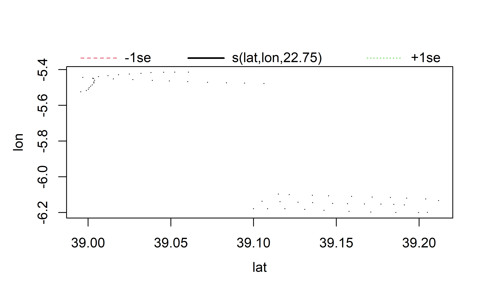
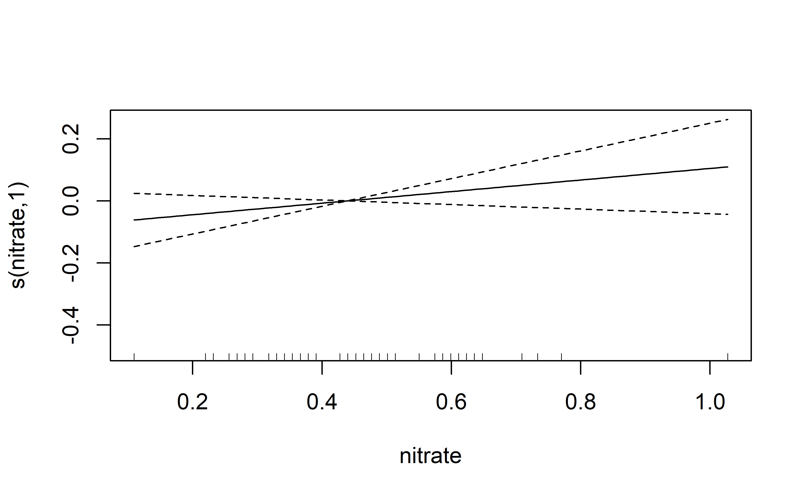
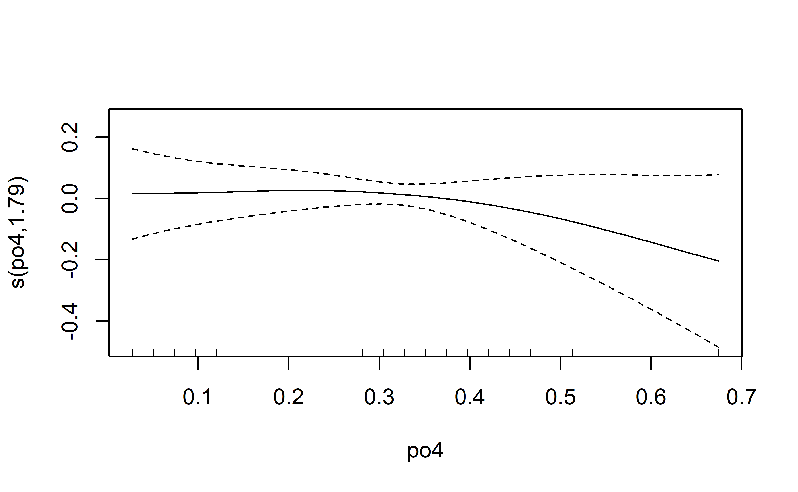
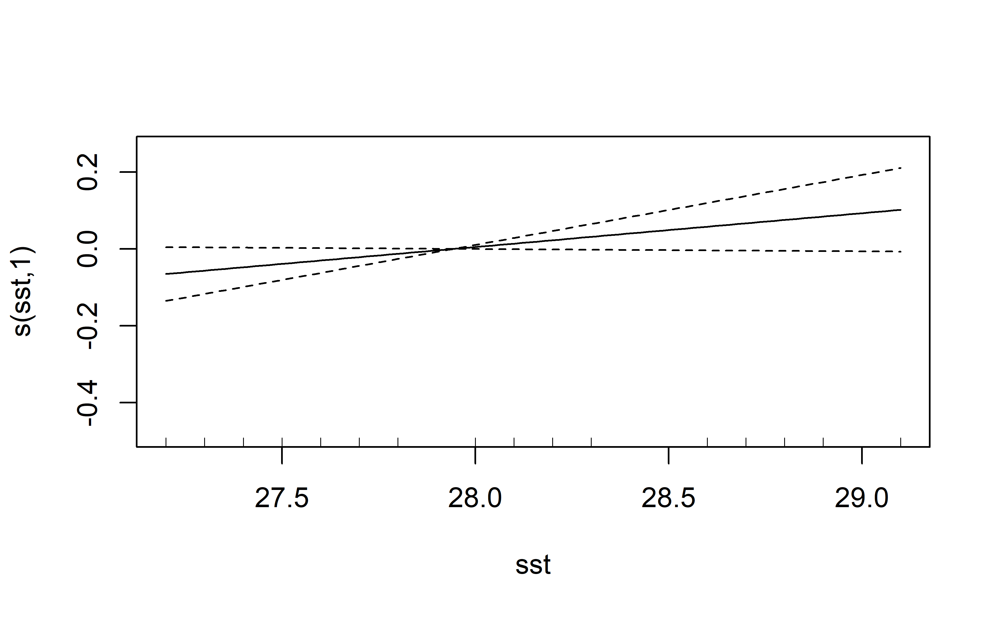
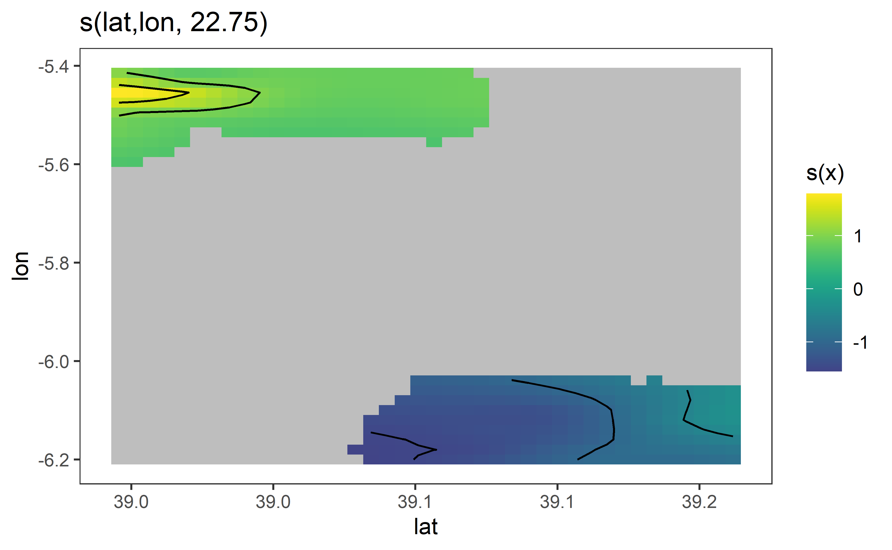
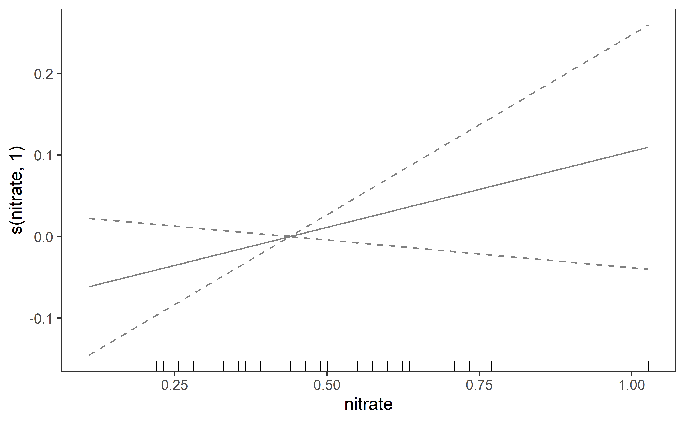
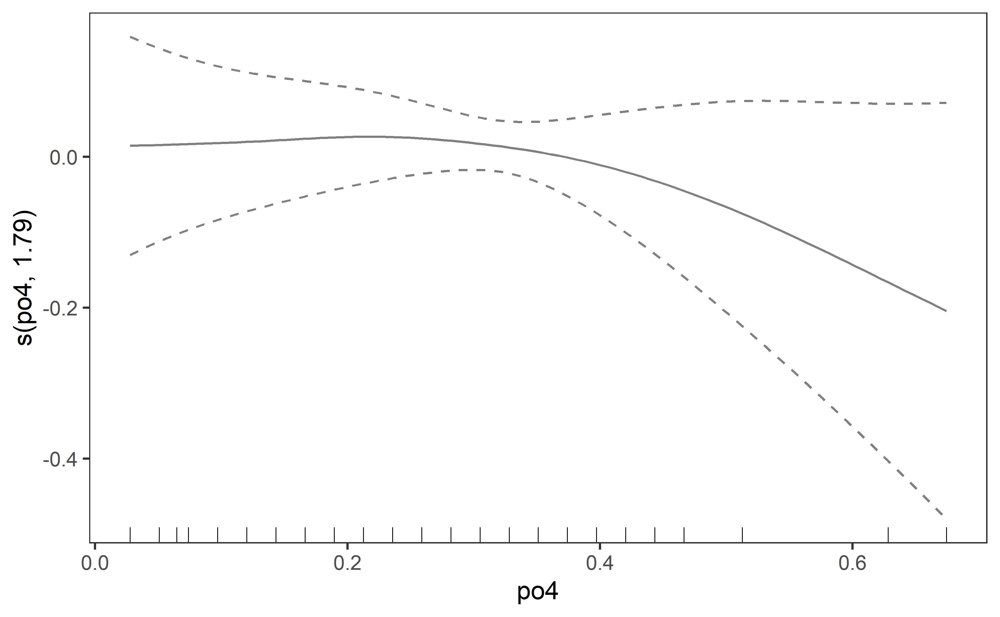
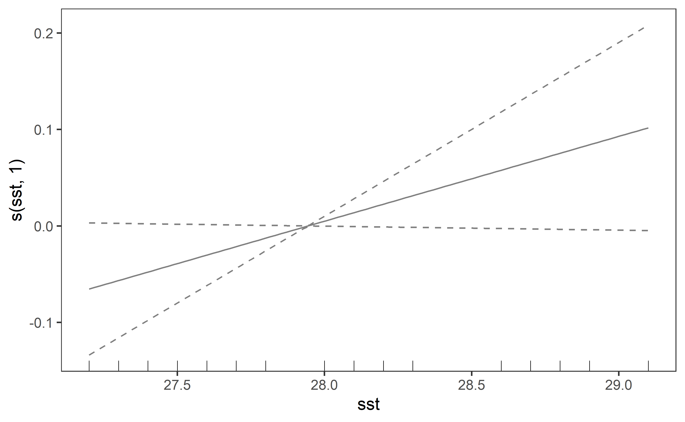
11.2 tuna
#> # A tibble: 1 x 5
#> statistic p.value autocorrelation method alternative
#> <dbl> <dbl> <dbl> <chr> <chr>
#> 1 1.86 0.246 0.0626 Durbin-Watson Test two.sided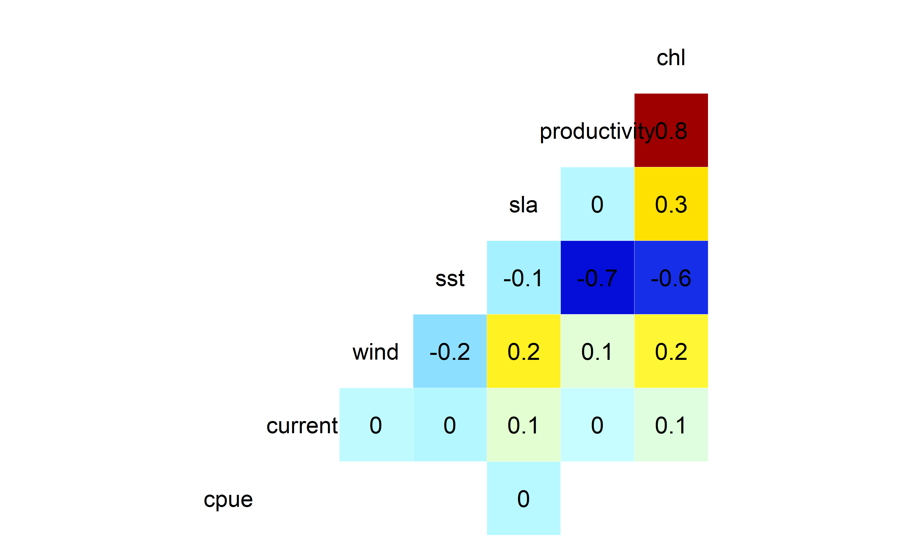
#> number of clusters: 1
#>
Median smoothing progress (parallel clusters): 100% - minimum remaining time: 0m 0s
#> Elapsed time median smoothing: 0m 0s
#>
#> Family: gaussian
#> Link function: identity
#>
#> Formula:
#> nbObs ~ s(lon, lat)
#>
#> Parametric coefficients:
#> Estimate Std. Error t value Pr(>|t|)
#> (Intercept) 308.21 1.82 169 <2e-16 ***
#> ---
#> Signif. codes: 0 '***' 0.001 '**' 0.01 '*' 0.05 '.' 0.1 ' ' 1
#>
#> Approximate significance of smooth terms:
#> edf Ref.df F p-value
#> s(lon,lat) 28.8 29 980 <2e-16 ***
#> ---
#> Signif. codes: 0 '***' 0.001 '**' 0.01 '*' 0.05 '.' 0.1 ' ' 1
#>
#> R-sq.(adj) = 0.991 Deviance explained = 99.2%
#> GCV = 994.22 Scale est. = 883.09 n = 267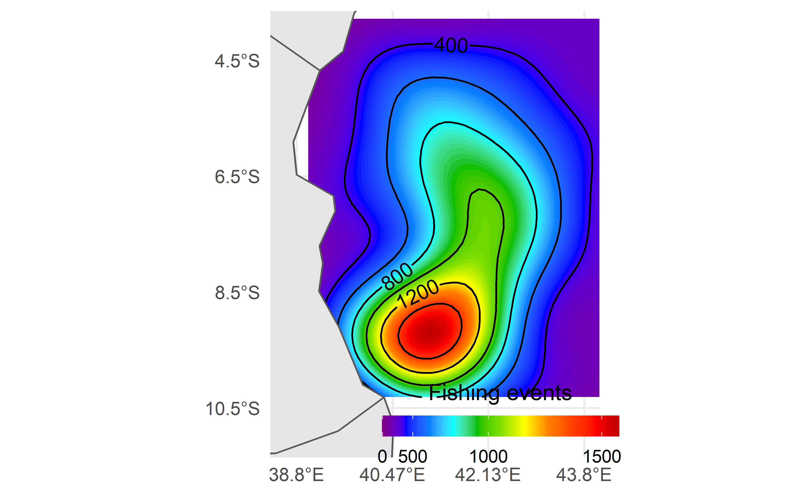